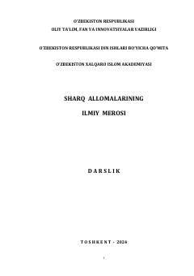

SAO'rta asr Sharq allomalarining boy ilmiy va ma'rifiy merosiga bag'ishlangan darslik.
Mazkur darslikda o'rta asrlarda ilm-fan yo'lida ulkan xizmatlarni amalga oshirgan sharq allomalarining ilmiy-ma'rifiy merosi muxtasar yoritilgan. Unda Xorazmiy, Farg'oniy, Beruniy, Ibn Sino, Mirzo Ulug'bek va boshqa buyuk mutafaxkirlarning hayoti hamda ilmiy faoliyati haqida batafsil ma'lumotlar berilgan. Kitob oliy ta'lim talabalari, tadqiqotchilar va keng kitobxonlar ommasiga mo'ljallangan.